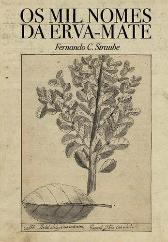
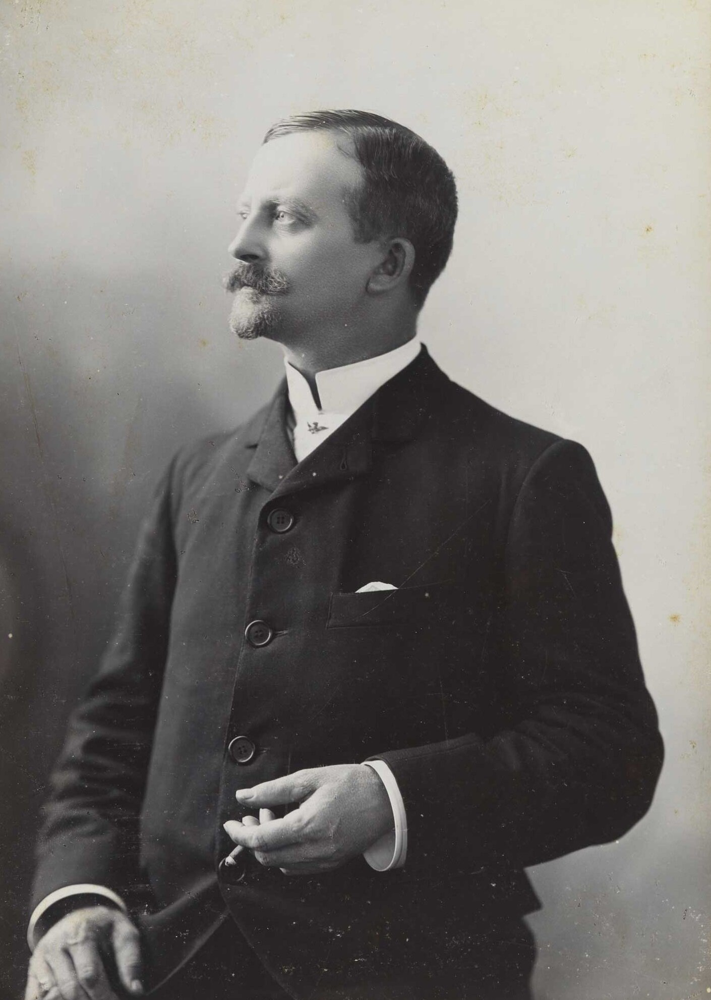
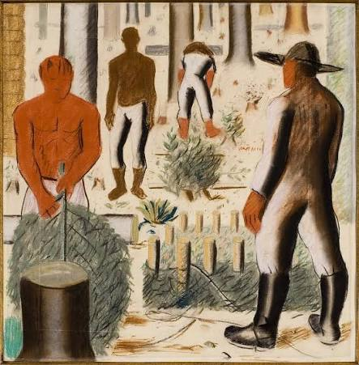

veja toda arte erva mata
conhencado cultura do parana e as expressoes artiticas nosso estado

importancia culural e contexto historiscos
poque esse tem e importancia para a cutuiral do parana e bem importancia

melhor arte do brasil
Alfredo Andersen o cara bem importencia pra clutura o portugues ajudou muitpo nossa culural ele basicimente pai da cultura do parana cara fez as obras Sapeco da Erva-Mate: Principal tela do artista sobre o ciclo econômico do mate mate varios ajudando outros Aqui está um textão completo, marcante e fluido que amarra toda essa história incrível, conectando a erva-mate, o Paraná e a arte que nasceu dessa junção! O Ouro Verde e a Tela: Como a Erva-Mate Moldou a Arte Paranaense Para entender a arte produzida no Paraná, é impossível não olhar para a terra, para a floresta de araucárias e, acima de tudo, para uma planta que transformou o destino de toda uma região: a erva-mate. O que começou como um saber sagrado dos povos originários tornou-se a força motriz que financiou a cultura, desenhou as cidades e definiu a própria identidade visual do povo paranaense. Antes de virar riqueza comercial, a erva-mate era a caá, um presente dos deuses para os povos Guarani e Kaingang. A prática de infusedar ou mastigar as folhas para buscar energia e fortalecer laços comunitários já trazia em si uma dimensão ritualística. Com a chegada dos europeus e o passar dos séculos, essa folha nativa cruzou as fronteiras das matas para dominar a economia. Durante o século XIX e o início do século XX, o Ciclo da Erva-Mate viveu seu auge no Paraná, gerando uma fortuna tão expressiva que os chamados "Barões do Mate" passaram a investir na construção de teatros, palacetes e na formação de um polo cultural no estado. É exatamente nesse ponto que a economia encontra a sensibilidade artística. O dinheiro do mate trouxe a infraestrutura, mas a planta em si trouxe a inspiração. Artistas que chegaram ao estado, como o norueguês Alfredo Andersen — carinhosamente chamado de pai da pintura paranaense —, voltaram seus olhares e pincéis para a vida cotidiana da colheita. Em obras emblemáticas como "Sapeco da Erva-Mate", o trabalho no campo deixou de ser mera atividade braçal para virar poesia visual, registrando a relação íntima do homem com a natureza do Sul. Porém, a grande revolução estética aconteceu na década de 1920 com o Movimento Paranista. Intelectuais e artistas locais decidiram que o Paraná não devia apenas copiar as tendências europeias ou do Rio de Janeiro; o estado precisava de uma arte com a sua própria cara. Liderado por nomes brilhantes como o escultor João Turin e o desenhista Lange de Morretes, o movimento elevou os símbolos da terra ao status de alta arte. As folhas da erva-mate, o pinhão e os galhos das araucárias passaram a ser estilizados em esculturas, vitrais, fachadas e nos mosaicos das calçadas de pedra portuguesa. A erva-mate já não era só a bebida do cotidiano ou o produto do galpão: era o contorno e a forma do orgulho paranaense. Anos mais tarde, essa herança encontrou voz nas mãos de mestres como Poty Lazzarotto. Em seus gigantescos painéis de azulejos e concreto, espalhados por espaços públicos de Curitiba e do interior, Poty imortalizou a saga dos carregadores, dos engenhos de mate, dos tropeiros e dos índios. O mate deixou de ser apenas matéria-prima para se tornar a própria memória gravada na pedra. Em suma, a história da arte no Paraná e a trajetória da erva-mate correm no mesmo rio. O mate não apenas bancou o nascimento das instituições culturais do estado, mas emprestou suas folhas, suas cores e sua gente para preencher as telas, as praças e os monumentos. Beber um chimarrão no Paraná é, até hoje, repetir um gesto ancestral que virou arte e moldou a história de toda uma gente.

curiosidades
curiosidades
Poty Lazzarotto foi um dos artistas mais famosos do Paraná, conhecido por seus murais e painéis. Poty nasceu em Curitiba, em 1924. A arte de Poty pode ser vista em diversos espaços públicos de Curitiba. O artista retratava a história, a cultura e o cotidiano do povo brasileiro. O Museu Oscar Niemeyer (MON), em Curitiba, é um dos maiores espaços de arte da América Latina. O MON é conhecido popularmente como Museu do Olho por causa do formato de uma de suas estruturas. O prédio do museu foi projetado pelo arquiteto Oscar Niemeyer. O Paraná possui uma forte tradição de arte indígena, produzida por diferentes povos originários. Os povos indígenas utilizam grafismos em objetos, cestarias, pinturas e outros elementos culturais. A cestaria indígena é uma forma de arte que também possui funções práticas e simbólicas. A arte ucraniana tem grande presença em cidades paranaenses, como Prudentópolis. Os ovos decorados chamados pêssankas são uma tradição ucraniana muito conhecida. As pêssankas apresentam símbolos e desenhos feitos com técnicas tradicionais. A imigração polonesa também influenciou a cultura e as artes do Paraná. A arquitetura de algumas cidades paranaenses revela influências de diferentes povos imigrantes. A cidade de Curitiba possui muitos murais e obras de arte espalhados pelas ruas. O artista curitibano João Turin foi um importante escultor paranaense. João Turin ficou conhecido por suas esculturas de animais e figuras humanas. Uma de suas obras mais conhecidas é O Tigre, que representa a força e a expressividade do animal. O Paraná também possui uma tradição importante de arte sacra, ligada às igrejas e à religiosidade. O Museu de Arte Contemporânea do Paraná (MAC-PR) foi criado em 1970. O MAC-PR reúne obras de artistas modernos e contemporâneos. A gravura é uma técnica artística importante na história da arte paranaense. A xilogravura é feita usando uma matriz de madeira para imprimir imagens. A litografia é uma técnica de impressão que utiliza uma matriz de pedra ou outro material apropriado. A arte paranaense inclui pintura, escultura, fotografia, desenho, gravura e instalações. A paisagem natural do Paraná inspira muitos artistas. As Cataratas do Iguaçu são um tema frequente em fotografias e representações artísticas. A Serra do Mar também inspira pinturas, desenhos e fotografias. A araucária, árvore símbolo do Paraná, aparece em diversas obras de arte regionais. O pinhão, fruto da araucária, também aparece como referência cultural e visual na região. A arte popular paranaense inclui trabalhos feitos com madeira, cerâmica, fibras e outros materiais. O artesanato de diferentes comunidades preserva técnicas transmitidas entre gerações. As festas tradicionais do Paraná combinam música, dança, figurinos e decoração artística. O fandango caiçara é uma expressão cultural tradicional do litoral paranaense. O fandango reúne música, dança e, em algumas modalidades, o sapateado. Instrumentos tradicionais e ritmos regionais também fazem parte do patrimônio cultural do estado. A arte urbana, como o grafite, transforma muros e espaços públicos em locais de expressão artística. Curitiba recebe eventos e exposições dedicados à arte contemporânea. A fotografia é importante para registrar a arquitetura, as paisagens e a diversidade cultural paranaense. O Teatro Guaíra, em Curitiba, é um dos principais espaços de artes cênicas do estado. O complexo do Teatro Guaíra abriga apresentações de teatro, dança e música. O Balé Teatro Guaíra é uma importante companhia de dança brasileira. A música também é considerada uma forma de expressão artística muito presente na cultura paranaense. A arte paranaense foi influenciada por diferentes culturas, incluindo indígenas, africanas e europeias. Muitos artistas utilizam materiais reciclados para criar esculturas e instalações. A arte contemporânea pode abordar temas como meio ambiente, identidade e desigualdade social. Universidades e escolas de arte do Paraná contribuem para a formação de novos artistas. As exposições de arte ajudam a preservar a memória e a identidade cultural do estado. A arte paranaense continua se renovando, misturando tradições antigas com novas técnicas e tecnologias.
curiosidades
ele e estrangerio